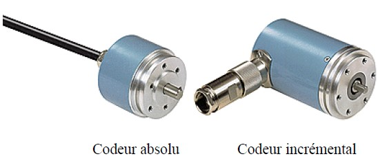

|
Capteurs numériques : les codeurs rotatifs |
Le contrôle du déplacement, de la position et de la vitesse est un problème habituellement rencontré sur les systèmes automatisés.
Les systèmes de détection conventionnels, interrupteurs de position, détecteur inductif ou photoélectrique trouvent rapidement leurs limites dès lors que le nombre de positions à contrôler devient trop important.
Les codeurs rotatifs permettent au système de traitement de maîtriser le positionnement d'un mobile avec une grande précision et sans répartir sur le système technique un grand nombre de détecteurs de position.
Un codeur optique est un capteur angulaire de position, lié mécaniquement à un arbre qui l'entraîne, son axe fait tourner un disque qui comporte une succession de zones opaques et transparentes.
La lumière émise par des diodes électroluminescentes arrive sur des photodiodes chaque fois qu'elle traverse les zones transparentes du disque. Les photodiodes génèrent alors un signal électrique.

Créé avec HelpNDoc Personal Edition: Sites web iPhone faciles